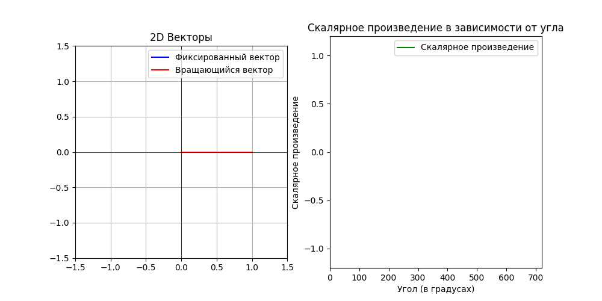

Вектор#
Поскольку существует множество способов представления векторов, изначально Стрэнг использует вектор-строки и вектор-столбцы. Вообще, векторы необязательно представлять в виде наборов координат - они могут существовать и вне координатной системы. Важно понимать, что вектор - это объект, который можно определить независимо от координатной системы. Он описывается своими свойствами и сохраняет свои инварианты, такие как длина, а представление в виде набора координат — это лишь один из способов его записи.
Вот так вот можно задать вектор в 2-х менрном пространстве (на плосткости):
Вот как можно записать \(n\)-мерный вектор:
Здесь:
\(v_1, v_2, \dots, v_n\) — координаты \(n\)-мерного вектора,
\(\vdots\) используется для обозначения “и так далее”.
Такой формат записи подчеркивает, что вектор может содержать любое количество компонентов \(n\), каждая из которых соответствует определённой координате в пространстве.
И тут можно сразу ввести те самые операции, которые делают вектор вектором:
Сложение двух векторов. Это такая операция, в результате которой получается ещё один вектор.
Для вектор-столбцов эта операция выглядит так:\[\begin{split} \boldsymbol{v} + \boldsymbol{w} = \begin{bmatrix} v_1 \\ v_2 \end{bmatrix} + \begin{bmatrix} w_1 \\ w_2 \end{bmatrix} = \begin{bmatrix} v_1 + w_1\\ v_2 + w_2 \end{bmatrix} \end{split}\]Умножение вектора на скаляр (скаляр — это одномерный вектор или, попросту, число):
\[\begin{split} c \boldsymbol{v} = c \begin{bmatrix} v_1 \\ v_2 \end{bmatrix} = \begin{bmatrix} c v_1 \\ c v_2 \end{bmatrix} \end{split}\]
Обязательно в результате этих операций должны получаются так-же вектора, а не другие объекты.
"""
Вектора в numpy, как и остальные объекты линейного пространства, задаются как таблицы координат.
Они представлены в виде одномерных массивов (numpy arrays), где каждая координата соответствует
определённой компоненте вектора. В NumPy легко выполнять операции сложения, вычитания, а также
умножения вектора на скаляр.
"""
import numpy as np
# Определяем два вектора v и w
v = np.array([1, 2, 3, 4])
print("Вектор v:", v)
w = np.array([1, 1, 1, 1])
print("Вектор w:", w)
# Сложение двух векторов
print("Вектор v + w:", v + w)
# Умножение вектора на скаляр
print("Вектор 4w:", 4 * w)
# Разность векторов
print("Разность векторов v - w:", v - w)
Вектор v: [1 2 3 4]
Вектор w: [1 1 1 1]
Вектор v + w: [2 3 4 5]
Вектор 4w: [4 4 4 4]
Разность векторов v - w: [0 1 2 3]
Если сложить вектор с самим собой, умноженным на минус единицу, то получим специальный вектор - нулевой вектор:
Вектор столбец можно записать и в строку например: $\( \boldsymbol{v} = \begin{bmatrix} v_1 \\ v_2 \end{bmatrix} = \left( v_1, v_2 \right) \neq \begin{bmatrix} v_1 & v_2 \end{bmatrix}. \)$ При этом стоит заметить, что вектор-строка это другой объект, не идентичный вектор-столбцу, различая должны проясниться в следующих главах. Горизонтальная запись вектор-столбца удобна в некоторых случаях.
Линейная комбинация#
Линейной комбинацией двух векторов называется выражение вида:
Например, для векторов из трёхмерного пространства линейная комбинация выглядит так:
Линейная комбинация может быть определена для любого числа векторов из одного линейного пространства. Вот пример линейной комбинации 4-х векторов в трёхмерном пространстве:
import numpy as np
import matplotlib.pyplot as plt
# vectors definition
v1 = np.array([1, 2])
v2 = np.array([3, 1])
# Coefficients of linear combination
a = 2
b = -1
linear_combination = a * v1 + b * v2
# Calculation of new vector
print("Вектор v1:", v1)
print("Вектор v2:", v2)
print(f"Линейная комбинация: {a} * v1 + {b} * v2 = {linear_combination}")
plt.figure(figsize=(4, 4))
plt.quiver(0, 0, v1[0], v1[1], angles='xy', scale_units='xy', scale=1, color='blue', label='v1')
plt.quiver(0, 0, v2[0], v2[1], angles='xy', scale_units='xy', scale=1, color='green', label='v2')
plt.quiver(0, 0, linear_combination[0], linear_combination[1], angles='xy', scale_units='xy', scale=1, color='red', label=f'{a} * v1 + {b} * v2')
plt.xlim(-5, 5)
plt.ylim(-5, 5)
plt.axhline(0, color='black',linewidth=0.5)
plt.axvline(0, color='black',linewidth=0.5)
plt.grid(color = 'gray', linestyle = '--', linewidth = 0.5)
plt.legend()
plt.gca().set_aspect('equal', adjustable='box')
plt.title("Линейная комбинация векторов")
plt.show()
Вектор v1: [1 2]
Вектор v2: [3 1]
Линейная комбинация: 2 * v1 + -1 * v2 = [-1 3]
Важные вопросы возникают, если перейти от одной комбинации, как в прошлом примере, ко всем комбинациям определённого вида. Как можно геометрически интерпретировать следующие линейные комбинации:
\(c \boldsymbol{u};\)
\(c \boldsymbol{u} + d \boldsymbol{v};\)
\(c \boldsymbol{u} + d \boldsymbol{v} + e \boldsymbol{w}?\)
Show code cell source
import numpy as np
import matplotlib.pyplot as plt
from mpl_toolkits.mplot3d import Axes3D
def plot_linear_combinations_3d(vector1, vector2, vector3, step=0.1, range_val=1):
"""
Plots the linear combinations of two 3D vectors in 3D space.
Parameters:
vector1 (numpy array): First 3D vector.
vector2 (numpy array): Second 3D vector.
vector3 (numpy array): Third 3D vector.
step (float): Step size for the coefficients.
range_val (float): Maximum absolute value of the coefficients.
"""
# Generate coefficients for the linear combinations
coeffs = np.arange(-range_val, range_val + step, step)
# Prepare a list to store all combinations
combinations = []
for a in coeffs:
for b in coeffs:
for c in coeffs:
combination = a * vector1 + b * vector2 + c * vector3
combinations.append(combination)
combinations = np.array(combinations)
# Create a 3D plot
fig = plt.figure(figsize=(4, 4))
ax = fig.add_subplot(111, projection='3d')
# Plot the linear combinations
ax.scatter(combinations[:, 0], combinations[:, 1], combinations[:, 2], s=1, c='blue', alpha=0.5, label='Линейные комбинации')
# Plot the original vectors
ax.quiver(0, 0, 0, vector1[0], vector1[1], vector1[2], color='red', label='Вектор 1')
ax.quiver(0, 0, 0, vector2[0], vector2[1], vector2[2], color='green', label='Вектор 2')
ax.quiver(0, 0, 0, vector3[0], vector3[1], vector3[2], color='yellow', label='Вектор 3')
# Add labels and legend
ax.set_xlabel('X-axis')
ax.set_ylabel('Y-axis')
ax.set_zlabel('Z-axis')
ax.set_title('Линейные комбинации векторов')
ax.legend()
ax.grid(True)
plt.show()
# Example usage:
vector1 = np.array([1, 2, 3])
vector2 = np.array([3, -1, 1])
vector3 = np.array([1, 5, 1])
plot_linear_combinations_3d(vector1, 0 * vector2, 0 * vector3, step=0.5, range_val=3)
plot_linear_combinations_3d(vector1, vector2, 0 * vector3, step=0.5, range_val=3)
plot_linear_combinations_3d(vector1, vector2, vector3, step=0.5, range_val=3)
Внутреннее произведение или скалярное произведение#
Могут ли взаимодействовать два вектора таким образом, чтобы в результате получался объект, отличный от вектора?
Внутреннее произведение двух элементов линейного пространства определяется рядом аксиом. Стрэнг вводит внутреннее произведение через координаты и отождествляет его со скалярным произведением. Для плоских вещественных пространств это действительно так, поэтому внутреннее произведение двумерных векторов можно найти следующим образом:
Например, внутреннее произведение вектор-столбцов (здесь я использую запись в строку с круглыми скобками):
Если векторное пространство задано над полем действительных чисел (то есть координаты векторов — действительные числа), то произведение \( \boldsymbol{v} \cdot \boldsymbol{w} = \boldsymbol{w} \cdot \boldsymbol{v} \). Поэтому для действительных векторов далее будет использован термин “скалярное произведение”. Если же координаты векторов — комплексные числа, то формула будет несколько иной.
В общем виде формула для вычисления скалярного произведения двух векторов из N-мерного пространства:
'''
Скалярное произведение векторов для объектов типа ndarray в numpy определяется через функцию np.dot .
Так же может задаваься оператором @ ;
'''
import numpy as np
import matplotlib.pyplot as plt
# Определяем два вектора
v = np.array([1, 3])
w = np.array([2, 2])
# Скалярное произведение
dot_product = np.dot(v, w)
# Или
dot_product = v @ w
# Вывод результатов
print("Вектор v:", v)
print("Вектор w:", w)
print("Скалярное произведение v • w:", dot_product)
Вектор v: [1 3]
Вектор w: [2 2]
Скалярное произведение v • w: 8
Можно геометрически проинтерпретировать следующее наблюдение: существуют такие ненулевые векторы, скалярное произведение которых равно нулю. Например:
Можно сказать, что такие векторы перпендикулярны в случае двух измерений или ортогональны в общем случае. Можно геометрически проинтерпретировать следующее наблюдение: существуют такие ненулевые векторы, скалярное произведение которых равно нулю. Например:
Можно сказать, что такие векторы перпендикулярны в случае двух измерений или ортогональны в общем случае.
С другой стороны, если ненулевой вектор умножить на самого себя, то получится число, большее нуля. По аналогии с числами можно сказать, что результат — это квадрат вектора. А так как результат — это число, его можно интерпретировать как квадрат длины вектора. Тогда можно дать определение длины вектора:
С другой стороны, если ненулевой вектор умножить на самого себя, то получится число, большее нуля. По аналогии с числами можно сказать, что результат — это квадрат вектора. А так как результат — это число, его можно интерпретировать как квадрат длины вектора. Тогда можно дать определение длины вектора:
Можно геометрически проинтерпретировать следующее наблюдение: существуют такие ненулевые векторы, скалярное произведение которых равно нулю. Например:
Можно сказать, что такие векторы перпендикулярны в случае двух измерений или ортогональны в общем случае.
С другой стороны, если ненулевой вектор умножить на самого себя, то получится число, большее нуля. По аналогии с числами можно сказать, что результат — это квадрат вектора. А так как результат — это число, его можно интерпретировать как квадрат длины вектора. Тогда можно дать определение длины вектора:
Если вектор представить как сумму следующего вида:
то длина вектора — это просто теорема Пифагора.
Show code cell source
import numpy as np
import matplotlib.pyplot as plt
# Демонстрация, что скалярное произведение может быть равно нулю ---
# Определим векторы v и w в 2D, у которых dot(v, w) = 0
v_2d = np.array([4, 6])
w_2d = np.array([3, -2])
dot_2d = np.dot(v_2d, w_2d)
print("Вектор v_2d:", v_2d)
print("Вектор w_2d:", w_2d)
print("Скалярное произведение v_2d • w_2d =", dot_2d)
# Проверка, являются ли векторы ортогональными
if dot_2d == 0:
print("Векторы v_2d и w_2d ортогональны (перпендикулярны) в 2D.\n")
else:
print("Векторы не ортогональны.\n")
# Визуализация ортогональных векторов в 2D
plt.figure(figsize=(8, 6))
plt.quiver(0, 0, v_2d[0], v_2d[1], angles='xy', scale_units='xy', scale=1, color='blue', label='v')
plt.quiver(0, 0, w_2d[0], w_2d[1], angles='xy', scale_units='xy', scale=1, color='green', label='w')
plt.xlim(-1, 7)
plt.ylim(-3, 7)
plt.axhline(0, color='black', linewidth=0.5)
plt.axvline(0, color='black', linewidth=0.5)
plt.gca().set_aspect('equal', adjustable='box')
plt.grid(True, linestyle='--', alpha=0.5)
plt.legend()
plt.title("Два ортогональных (перпендикулярных) вектора в 2D")
plt.show()
Вектор v_2d: [4 6]
Вектор w_2d: [ 3 -2]
Скалярное произведение v_2d • w_2d = 0
Векторы v_2d и w_2d ортогональны (перпендикулярны) в 2D.
Show code cell source
def plot_vector_length(vector):
"""
Plots the geometric interpretation of a vector's length in 3D space.
Parameters:
vector (numpy array): The vector to visualize.
"""
x, y, z = vector
length = np.sqrt(x**2 + y**2 + z**2)
fig = plt.figure(figsize=(5, 5))
ax = fig.add_subplot(111, projection='3d')
ax.quiver(0, 0, 0,
x, y, z,
color='blue', label=f'Вектор {vector},\n Длинна = √{int(length**2)}', arrow_length_ratio=0.2/length)
ax.quiver(0, 0, 0, x, 0, 0, color='red', label='Проекция на X', arrow_length_ratio=0.2/x)
ax.quiver(x, 0, 0, 0, y, 0, color='green', label='Проекция на Y', arrow_length_ratio=0.2/y)
ax.quiver(x, y, 0, 0, 0, z, color='purple', label='Проекция на Z', arrow_length_ratio=0.2/z)
ax.set_xlabel('X')
ax.set_ylabel('Y')
ax.set_zlabel('Z')
ax.set_title('Длинна вектора как теорема Пифагора')
ax.legend()
ax.grid(True)
ax.set_xlim([0, x])
ax.set_ylim([0, y])
ax.set_zlim([0, z])
plt.show()
vector = np.array([1, 2, 3])
plot_vector_length(vector)
Вектор с длиной, равной 1, называется единичным вектором:
\(\boldsymbol{u}\) — единичный вектор.
Для каждого вектора, кроме нулевого, можно построить единичный вектор, который направлен в ту же сторону, что и сам вектор:
Доказательство, что длина такого вектора равна 1:
Угол между векторами можно определить как угол между единичными векторами направленными в том же направлении, что и исходные вектора. Ниже я построил зависимость скалярного произведения, от угла между единичными векторами. Получившаяся зависимость подозрительно похожа косинус.
Show code cell source
import numpy as np
import matplotlib.pyplot as plt
from matplotlib.animation import FuncAnimation, PillowWriter
def plot_2d_rotating_vector_and_scalar_product_gif(save_path="rotating_vectors_2d.gif"):
"""
Creates a GIF showing two 2D unit vectors where one rotates,
and plots the scalar product as a function of the angle.
Parameters:
save_path (str): Path to save the generated GIF.
"""
# Функция поворота 2D-вектора против часовой стрелки на заданный угол
def rotate_vector_2d(vector, angle):
"""
Rotates a 2D vector counterclockwise by a given angle.
Parameters:
vector (np.array): 2D vector to rotate.
angle (float): Angle in radians.
Returns:
np.array: Rotated 2D vector.
"""
rotation_matrix = np.array([
[np.cos(angle), -np.sin(angle)],
[np.sin(angle), np.cos(angle)]
])
return rotation_matrix.dot(vector)
# Задаём первый вектор (фиксированный), направленный вдоль оси X
vector1 = np.array([1, 0])
# Второй вектор, который будет вращаться
vector2 = np.array([1, 0]) # Изначально совпадает с vector1
# Диапазон углов (от 0 до 4π), что соответствует 0–720 градусам
angles = np.linspace(0, 4 * np.pi, 100)
# Предварительно вычисляем скалярные произведения для построения графика
scalar_products = [np.dot(vector1, rotate_vector_2d(vector2, angle)) for angle in angles]
# Создаём фигуру и два подграфика
fig, (ax_vector, ax_scalar) = plt.subplots(1, 2, figsize=(10, 5))
# Инициализируем подграфик для 2D-векторов
fixed_vector_plot, = ax_vector.plot([0, vector1[0]], [0, vector1[1]],
color='blue', label="Фиксированный вектор")
rotating_vector_plot, = ax_vector.plot([0, vector2[0]], [0, vector2[1]],
color='red', label="Вращающийся вектор")
ax_vector.set_xlim(-1.5, 1.5)
ax_vector.set_ylim(-1.5, 1.5)
ax_vector.axhline(0, color='black', linewidth=0.5)
ax_vector.axvline(0, color='black', linewidth=0.5)
ax_vector.grid(True)
ax_vector.set_aspect('equal', adjustable='box')
ax_vector.set_title("2D Векторы")
ax_vector.legend()
# Инициализируем подграфик для скалярного произведения
ax_scalar.set_xlim(0, 720) # угол в градусах
ax_scalar.set_ylim(-1.2, 1.2)
ax_scalar.set_xlabel("Угол (в градусах)")
ax_scalar.set_ylabel("Скалярное произведение")
ax_scalar.set_title("Скалярное произведение в зависимости от угла")
scalar_plot, = ax_scalar.plot([], [], color='green', label="Скалярное произведение")
ax_scalar.legend()
# Функция обновления анимации для каждого кадра
def update(frame):
angle = angles[frame]
rotated_vector = rotate_vector_2d(vector2, angle)
# Обновляем положение вращающегося вектора
rotating_vector_plot.set_data([0, rotated_vector[0]], [0, rotated_vector[1]])
# Обновляем график скалярного произведения
scalar_plot.set_data(np.degrees(angles[:frame]), scalar_products[:frame])
return rotating_vector_plot, scalar_plot
# Создаём анимацию
anim = FuncAnimation(fig, update, frames=len(angles), interval=50, blit=False)
# Сохраняем анимацию в формате GIF
writer = PillowWriter(fps=20)
anim.save(save_path, writer=writer)
print(f"GIF сохранён в {save_path}")
plot_2d_rotating_vector_and_scalar_product_gif("rotating_vectors_2d.gif")
Show code cell output
GIF сохранён в rotating_vectors_2d.gif

Можно заметить, что скалярное произведение между единичными векторами равно косинусу угла между ними:
Если же векторы не единичные, то можно разделить каждый из них на его модуль, тогда выражение для косинуса угла между векторами примет вид:
Из последней формулы очевидным образом выводятся два важных неравенства.
Неравенство Шварца:
Неравенство треугольника: